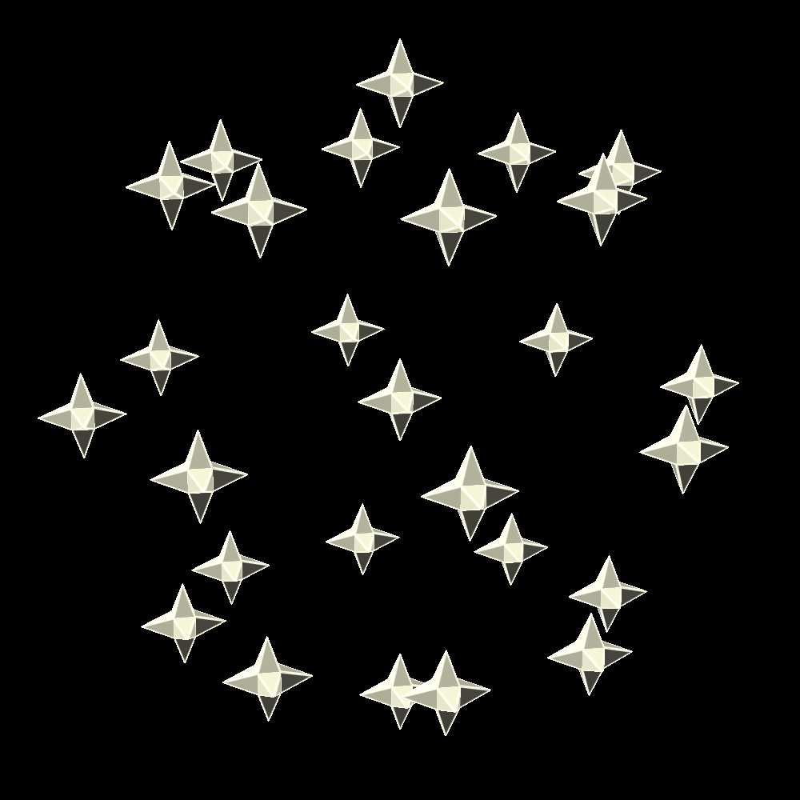

| civic chip requirements | 1.024e+15 bits, 1.759e+20 bits/s | |||||
|---|---|---|---|---|---|
| number needed | power draw | bare substrate volume | processing used | memory used | |
| Civic-2 chip | 3518 | 35.17kW | 0.000351800m3 ≈ (70.59mm)3 | 99.98% | 0.03% |
| Civic-3 chip | 22 | 219.8W | 2200.00mm3 ≈ (13.01mm)3 | 99.93% | 4.65% |
| Civic-4 chip | 2 | 5.628W | 200.000mm3 ≈ (5.848mm)3 | 28.14% | 85.33% |